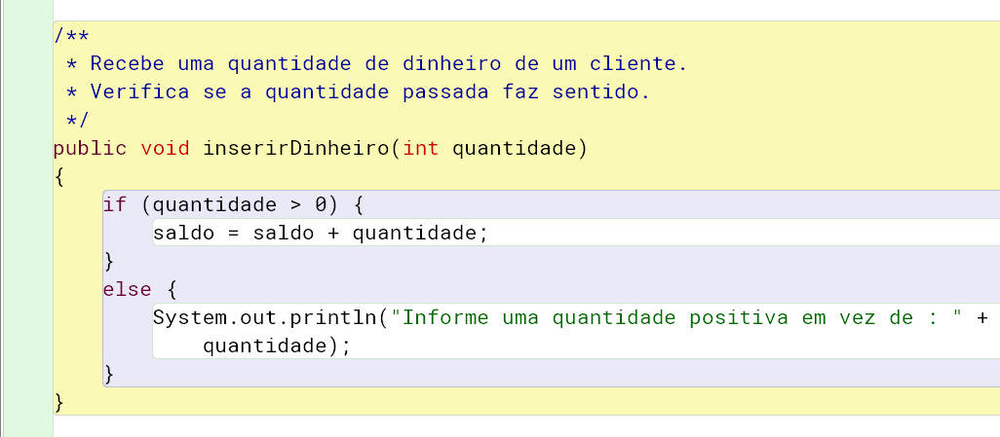

IPOO - Cap. 2 Entendendo as Definições de Classe
Aula 2.3 - Teórica
DAC - ICET - Universidade Federal de Lavras
22/08/2026
Como estudar?
Precisa repetir? :)
- Como diz o ditado: água mole em pedra dura tanto bate até que fura.
Então vamos relembrar as dicas:
- É essencial praticar enquanto estuda, usando o BlueJ.
- Ajuda muito se você ler o capítulo do livro da disciplina para tirar dúvidas e complementar o que está sendo estudado.
- Use um caderno e caneta para anotar os principais conceitos e eventuais dúvidas que surgirem.


Design da Máquina de Ingressos
Nas aulas anteriores você deve ter percebido que a classe MaquinaIngressos não serviria muito no mundo real, já que ela tem vários problemas.
- Não verifica se o cliente colocou dinheiro suficiente para comprar o ingresso.
- Não retorna troco se o cliente colocou mais dinheiro que o necessário.
- Não verifica se a quantidade de dinheiro faz sentido (aceita valor negativo, por exemplo).
- E o mesmo para o preço do ingresso (passado para o construtor).
Corrigindo isso, teríamos um software que realmente poderia servir de base para uma máquina de ingressos real.
- Vamos então avaliar o projeto maquina-ingressos-melhor, que tenta resolver os problemas apontados.
Antes de analisarmos o código, experimente:
- criar uma máquina de ingressos e chamar seus métodos, verificando o que funciona de forma diferente.
- Veja, por exemplo, que há um novo método
retornarTroco. Veja o que acontece quando ele é chamado.
Comando Condicional
Dê uma olhada no código da classe MaquinaIngressos do novo projeto.
- Veja que o nome da classe, os atributos, o construtor e os métodos de acesso são os mesmos da versão anterior.
- A primeira mudança está no método
inserirDinheiro.
Veja que o método possui um tratamento para evitar que o usuário insira quantidades negativas de dinheiro.
Um outro exemplo de comando condicional pode ser encontrado no método imprimirIngresso.
if (saldo >= preco) {
// ... detalhes de impressão omitidos ...
// Atualiza o total coletado com o saldo
total = total + preco;
// Reduz o saldo de acordo com o preço do ingresso
saldo = saldo - preco;
}
else {
System.out.println("Você precisa inserir pelo menos mais : " +
(preco - saldo) + " centavos.");
}Com ele, corrigimos o problema da versão ingênua da máquina
- de não verificar se o cliente tinha inserido quantidade suficiente de dinheiro antes de imprimir o ingresso.
if (saldo >= preco) {
// ... detalhes de impressão omitidos ...
// Atualiza o total coletado com o saldo
total = total + preco;
// Reduz o saldo de acordo com o preço do ingresso
saldo = saldo - preco;
}
else {
System.out.println("Você precisa inserir pelo menos mais : " +
(preco - saldo) + " centavos.");
}Se o valor do atributo saldo é maior, ou pelo menos igual, ao atributo preco.
- O ingresso é impresso.
- Caso contrário, é exibida uma mensagem de erro.
Repare que a mensagem de erro segue o mesmo padrão que já vimos antes, é apenas mais verboso.
Quantos parâmetro o método println está recebendo?
- Apenas um!
- Uma string formada pela concatenação do texto, mais o resultado da conta
preco - saldo, mais o final do texto.
Exercício
No método imprimirIngresso, o que acontece se removermos os parênteses do cálculo preco - saldo?
Por que isso acontece?
Exercício
Compare a implementação do método imprimirIngresso no projeto maquina-ingressos-melhor com o projeto anterior. Experimente com o BlueJ situações iguais nos dois projetos e compare o que acontece. Repare que, além de ter um comando condicional, o total e o saldo são atualizados de forma diferente.
Exercício
Seria possível remover o bloco else do método imprimirIngresso? Qual seria o efeito para o usuário, quando ele tentasse imprimir um ingresso sem inserir quantidade suficiente de dinheiro.
Exercício
Avalie a implementação do método retornarTroco. Experimente colocar mais dinheiro que o necessário para um ingresso, imprima um ingresso e então chame o método retornarTroco. Tente também chamar o método quando não há saldo de dinheiro disponível.
O comando if-else tem duas formas
- ambas são controladas pela avaliação de uma expressão booleana.
- Na primeira forma, o valor da expressão booleana é usado para decidir se os comandos serão executados ou não.
- Na segunda, a expressão é usada para escolher entre duas alternativas, e somente uma delas é executada.
Exemplos
É muito comum juntar comandos if-else colocando um segundo if-else na bloco else do primeiro.
- Isso pode ser feito várias vezes.
- E é uma boa ideia sempre incluir uma parte
elseao final.
Já o comando switch permite avaliar um valor e, a partir dele, tratar qualquer número de casos.
- Existem duas formas principais de uso.
Algumas obsevações sobre o comando switch:
- Ele pode ter qualquer número de casos (
case). - O comando
breaké necessário para evitar que execução continue para o próximo caso.- A segunda forma de uso apriveita disso para que os três primeiros valores levem ao mesmo bloco de comandos.
- O comando
defaulté opcional, ele evita que nada seja executado se o valor não for de nenhum dos casos anteriores. - Tanto a expressão do
switchquanto os rótulos dos casos podem ser strings.
Exemplos
switch(dia) {
case 1: diaDaSemana = "domingo";
break;
case 2: diaDaSemana = "segunda-feira";
break;
case 3: diaDaSemana = "terça-feira";
break;
case 4: diaDaSemana = "quarta-feira";
break;
case 5: diaDaSemana = "quinta-feira";
break;
case 6: diaDaSemana = "sexta-feira";
break;
case 7: diaDaSemana = "sábado";
break;
default: diaDaSemana = "dia inválido";
break;
}Exemplos
Scope Highlighting
Ao avaliar o código de uma classe no BlueJ, você deve ter notado que ele mostra caixas coloridas ao redor de alguns elementos.
- Como ao redor dos blocos e comandos condicionais, por exemplo.

Esses destaques coloridos são chamados de scope highlighting (ou destaque de escopo).
- Eles nos ajudam a entender as unidades lógicas do programa.
- Um escopo, ou bloco, é o código que existe entre um par de chaves.
- O corpo de uma classe é um escopo.
- O corpo de cada método também é um escopo.
- E mesmo a parte do
ifde um comando condicional também é um escopo. - Portanto, podemos ter escopos aninhados (ou seja, um dentro do outro).
O BlueJ nos ajuda a identificar os escopos usando cores diferentes para cada um.
- Na imagem vemos com fundo branco os escopos de cada bloco do
ifeelse. - Com fundo roxo, o escopo do comando condicional.
- Com fundo amarelo o escopo do método.
- E com fundo verde o escopo da classe.
Um erro muito comum para quem está começando é esquecer de fechar as chaves, ou colocar uma chave em um lugar errado.
- As cores do BlueJ nos ajudam a identificar esse tipo de problema.
- Além disso, é muito importante indentar o código, usando tabulação para cada bloco de código (cada trecho entre chaves).

Convenção
Se a sua indentação estiver ficando uma bagunça, o BlueJ pode te ajudar. Experimente alterar o código e forma que a indentação fique errada e depois a corriga automaticamente, acessando o menu Editar → Auto-indentação do editor de código do BlueJ.
Exercício
Experimente remover uma chave do código da classe MaquinaIngressos e repare o que é alterado nas cores de fundo do editor de código. Experimente também inserir uma chave onde ela não seria esperada.
Exercício
Escreva um trecho de código em Java que compara o valor das variáveis preco e estimativa. Se o preço for maior que a estimativa, deve ser exibida a mensagem Muito caro.. Se o preço estiver abaixo da estimativa, a mensagem exibida deve ser Bora comprar, tá barato.. Por fim, se o preço for exatamente igual à estimativa, exiba a mensagem Na mosca!.
Variáveis locais
Até agora usamos dois tipos de variáveis: atributos (variáveis de instância) e parâmetros.
- Vamos agora conhecer um terceiro tipo.
- O que os três tipos têm em comum?
- Todas eles servem para armazenar dados, mas cada um tem um objetivo diferente.
Repare o código do método retornarTroco.
- Ele possui três comandos e uma declaração (da variável
troco).
Como podemos saber que a variável troco não é um atributo?
- Por que atributos são declarados fora dos métodos (diretamente no escopo da classe).
E como sabemos que ela não é um parâmetro?
- Por que parâmetros são declarados na assinatura dos métodos e construtores.
A variável troco é de um terceiro tipo: ela é uma variável local.
A variável troco é de um terceiro tipo: ela é uma variável local.
- Tem esse nome porque ela é declarada dentro do corpo de um método.
- E, portanto, tem um escopo local
- do método, ou do bloco onde é declarada.
Variáveis locais são declaradas como os atributos
- mas sem os modificadores public e private.
E a principal diferença é o tempo de vida.
- Variáves locais existem somente durante a execução do método.
- Diferente dos atributos que existem na memória enquanto o objeto existir.
Nós evitamos declarar como atributos variáveis que não precisam ser mantidas em memória depois que o método é chamado.
- Repare que atributos são características dos objetos.
- Já variáveis locais são apenas informações temporárias usadas para fazer algo durante a execução de um método.
- Portanto, se algo só precisa existir durante a execução do método, declará-lo como atributo desperdiçaria memória e feriria o conceito de objetos.
Nós usamos variáveis locais mesmo quando dois métodos na mesma classe têm variáveis locais com o mesmo objetivo.
- Muitas vezes até com o mesmo nome.
É tentador declarar como atributo para “reaproveitar” a mesma declaração.
- Mas, não devemos usar atributos para valores que não precisam existir depois da chamada dos métodos.
Por exemplo:
- No método
retornarTroco, a variáveltrocoé usada, temporariamente, apenas para guardar o valor do saldo antes dele ser zerado. - Depois que o método é finalizado, não faz mais sentido guardar o valor do troco.
Cuidado
Se você declarar uma variável local (ou um parâmetro) com o mesmo nome de um atributo, você não conseguirá acessar o atributo dentro do método ou construtor onde a variável local foi declarada.
No capítulo 3 aprenderemos um jeito de lidar com isso, se necessário.
Exercício
O que há de errado com a implementação alternativa abaixo do construtor da classe MaquinaIngressos?
Tente usar essa versão. O código compila?
Crie um objeto e inspecione o valor dos atributos.
Há algo de errado com o atributo preco?
Consegue explicar o que aconteceu?
Quiz 2.5
O tempo de vida de uma variável local é:
- O mesmo do programa.
- O mesmo da classe.
- O mesmo do objeto.
- O mesmo do método ou construtor.
Quiz 2.6
Escolha a melhor opção para completar a frase: Uma variável local é acessível ________:
- em qualquer classe do programa.
- na classe onde é declarada.
- no método ou construtor onde é declarada.
- no bloco de código onde é declarada.
Atributos, parâmetros e variáveis locais
É importante entender as semelhanças e diferenças entre atributos, parâmetros e variáveis locais.
- Os três servem para armazenar valores de acordo com seu tipo.
- Mas possuem diferenças importantes, como mostrado na tabela a seguir.
| Atributos | Parâmetros | Variáveis locais | |
|---|---|---|---|
| Declaração | fora dos métodos e construtores | na assinatura de métodos/construtores | no corpo dos métodos/construtores |
| Tempo de vida | do objeto | do método/construtor | do método/construtor |
| Escopo | acessível em qualquer lugar da classe | acessível no método/construtor | acessível no bloco onde é declarada |
| Valor padrão | Sim | Não (valor é passado de fora do objeto) | Não (precisa ser inicializada antes de ser usada) |
Dica
Se estiver em dúvida se uma variável deve ser declarada como atributo ou variável local:
- Dê preferência sempre a declará-la como variável local.
- Só declare como atributo se tiver certeza que:
- É uma informação que precisa ser mantida mesmo depois da chamada do método.
- É uma característica do objeto (algo que o descreve/representa).
Exercício
Adicione um novo método esvaziar à classe MaquinaIngressos. Você já tinha feito isso na aula passada no projeto anterior, mas, agora, além zerar o valor do atributo total, o método deve retornar o valor do total antes dele ser zerado.
Exercício
Altere o método imprimirIngresso criando uma variável local chamada valorQueFalta. A variável deve receber a diferença entre o preço e o saldo, ou seja, o valor que falta para completar o preço de um ingresso. Altere o comando condicional para que o teste seja feito verificando o valor da variável valorQueFalta, e utilize a variável também na mensagem dada quando não há dinheiro suficiente para comprar um ingresso.
Teste as alterações criando situações que caiam tanto no bloco if quanto no bloco else, para garantir que tudo está funcionando como deveria.
(Opcional) Exercício - Desafio
Salve o projeto da máquina de ingressos com um novo nome (ex.: maquina-ingressos-varios-precos).
Altere a classe MaquinaIngressos do novo projeto de forma que ela possa emitir ingressos de preços diferentes. Imagine que a máquina real tenha um botão que permite ao usuário escolher uma opção de ingresso com desconto, antes de solicitar a impressão do ingresso.
Quais atributos e métodos precisariam ser adicionados à classe para tratar isso?
Você acha que seria necessário alterar muitos dos métodos que já existiam?
Reforçando conceitos
Para reforçar os novos conceitos que aprendemos, vamos revisitar o projeto disciplina que estudamos no capítulo 1.
Abra o projeto e leia com cuidado o código da classe Estudante, tentando responder às perguntas abaixo.
- Quais são as informações que precisam ser guardadas enquanto o estudante existir?
- Quando um objeto é criado, quais informações são recebidas de fora e quais são inicializadas com um valor fixo?
- Quais informações podem ser consultadas de fora do objeto?
- E quais podem ser alteradas depois que o objeto é criado?
Veja que o nome, a matrícula e o número de créditos do estudante são as informações que devem ficar guardadas enquanto o objeto estudante existir.
- Portanto, essas informações devem ser declaradas como atributos da classe.
Os atributos nome e matricula são inicializados no construtor a partir de valores recebidos por parâmetro.
- Já o número de
creditosé inicializado com um valor fixo.
Os três atributos possuem métodos de acesso (métodos obter).
- O número de matrícula não pode ser alterado (é imutável), já nome e número de créditos podem ser alterados por métodos modificadores.
Chamando métodos
O método obterLogin da classe Estudante tem algo diferente que é interessante analisarmos.
Repare em dois pontos interessantes:
- Estamos chamando métodos de outro objeto que retornam resultados.
- Os resultados retornados são usados como parte de uma expressão.
Os atributos nome e matricula são objetos String.
- E a classe
Stringpossui um método chamadosubstring.
O método substring tem o seguinte comentário e assinatura.
Pelo comentário vemos que o método retorna uma string que é parte da string original.
- A string retornada inclui os caracteres que estão da posição
beginIndex(primeiro parâmetro) até a posição anterior aendIndex(segundo parâmetro).
Sabendo disso, vamos entender como o método obterLogin funciona.
A primeira parte da expressão implementada é nome.substring(0,4).
- Pelo que vimos do método
substring, isso significa que são retornados os quatro primeiros caracteres do nome do estudante (da posição 0 até a posição 3).
Já a segunda parte da expressão é matricula.substring(0,3). O que ela retorna?
- Os três primeiros caracteres da matrícula.
Portanto, para um aluno de nome “Sebastião da Silva” e matrícula 435221, qual seria o valor retornado pelo método obterLogin?
- Pense primeiro na resposta e depois valide criando um objeto no BlueJ.
- Veja que o retorno seria “Seba435”.
Exercício
Qual seria o login retornado para uma estudante chamada “Maria Pereira”, com matrícula 332211?
Exercício
Crie um Estudante com o nome "Teo" e matrícula "748392". O que acontece quando o método obterLogin é chamado para este estudante? Por que você acha que isso acontece?
Exercício
A classe String possui um método de acesso chamado length, com o seguinte cabeçalho:
Adicione um comando condicional ao construtor da classe Estudante e imprima um erro na tela caso o parâmetro nomeCompleto tenha menos que quatro caracteres, ou o parâmetro matriculaEstudante tenha menos de três caracteres.
Obs.: mesmo que a mensagem seja exibida, o objeto deve ser criado normalmente com os valores passados.
Exercício - Desafio
Altere o método obterLogin da classe Estudante de forma que ele sempre retorne um login, mesmo que os atributos nome e matricula não tenham os tamanhos mínimos esperados. Caso algum atributo tenha tamanho insuficiente, use todos os caracteres do atributo.
Experimentando o Bloco de Códigos (Code Pad) do BlueJ
É muito comum precisarmos implementar expressões em nossos códigos.
- Como cálculos usando variáveis.
- Ou chamadas de métodos de variáveis que são objetos.
- O Bloco de Códigos do BlueJ pode ser muito útil para experimentarmos expressões antes de as implementarmos em nossas classes.
Tente adivinhar os resultados das expressões abaixo, antes de usar o Bloco de Códigos.
2023 + 4"passa" + "tempo""passa" + 97 + 2 + "tempo""tempo" + 7 + 2"passatempo".substring(5,6)"passatempo".substring(5,11)
O que foi novidade para você nesse exercício?
No Bloco de Códigos, quando o resultado de uma expressão é um objeto (como uma String), aparece um símbolo vermelho próximo ao resultado.
- Você pode clicar duas vezes no símbolo para inspecionar o objeto.
- Ou clicar uma vez para colocá-lo na bancada de objetos.
- Experimente!
Você pode também declarar variáveis e escrever comandos completos no Bloco de Códigos.
- Experimente os comandos abaixo:
soma = 2023 + 4;int soma = 0;soma = 2023 + 4;
Se você digitar o nome de uma variável sem ponto-e-vírgula, o Bloco de Códigos exibe seu valor.
- Experimente digitar, por exemplo:
soma
Exercício
Abra o projeto maquina-ingressos-melhor e digite o código abaixo. Veja que tem linhas que terminam com ponto-e-virgula e outras não. Preste atenção ao valor retornado pelo método obterSaldo em cada chamada.
Exercício
Agora digite o comando abaixo
Avalie a linha abaixo e tente adivinhar o que ela vai retornar antes de digitar o código no Bloco de Códigos.
A resposta foi a que você esperava?
Você consegue imaginar alguma ligação entre m1 e m2 que explique o que está acontecendo?
O que parece ter acontecido no exercício anterior?
- Veja que a atribuição
m2 = m1faz com que as duas variáveis referenciem (ou apontem para) o mesmo objeto. - Isso porque variáveis de tipo objeto em Java são na verdade ponteiros.
- Portanto, a atribuição copia o endereço de memória que a variável
m1guarda, para a variávelm2. - E assim, como agora
m2guarda o mesmo endereço dem1, ambas estão apontando para o mesmo objeto.